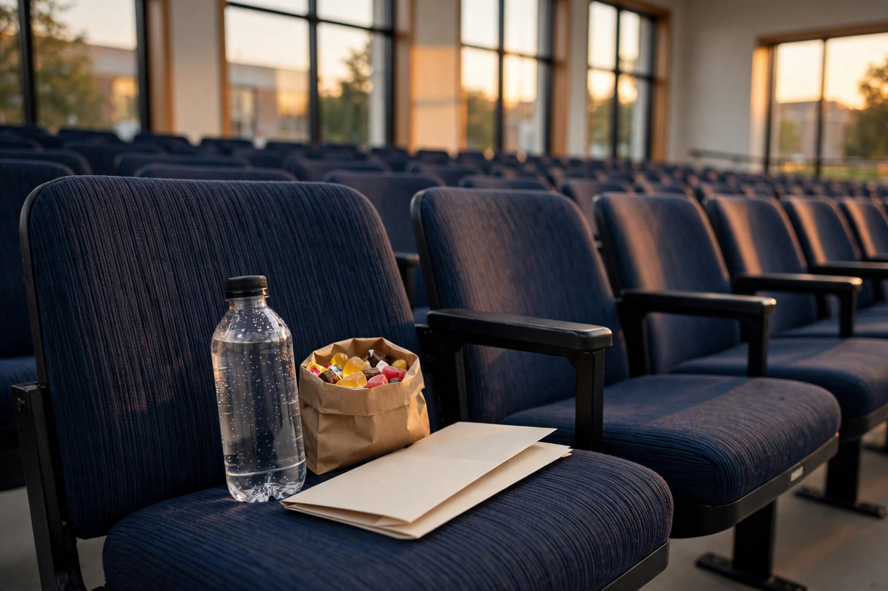

The long recital survival plan: a tongue-in-cheek timeline for multi-hour school evenings

A twenty-minute class presentation is a skirmish. A two-hour winter recital — forty kids, one piano, infinite renditions of the same three songs — is a campaign. You do not survive a campaign on vibes alone. You survive it with a plan, timed supplies, and the strategic wisdom of every tired parent who has sat in that folding chair before you. What follows is the full timeline, from ninety minutes before curtain to the car ride home.
The pre-game (90 minutes before curtain)
Champions are made before the event, not during it. Execute in order:
- Eat something real. Not a granola bar you found in the glove compartment — an actual meal. An empty stomach plus a warm gymnasium is a recipe for lights-out by the second act.
- Coffee, timed deliberately. Drink it about an hour before showtime so it is fully on duty by the opening number. The earnest parent-survival blogs are right about one thing: coffee is the central ritual. Respect it. Time it.
- Pack the emergency kit. Sour candy (the wake-up candy of champions), a bottle of water, and mints. Sour beats sweet: the shock value is the point.
- Recruit a spotter. Text your partner or the parent sitting next to you: "nudge me if my head does the thing." The buddy system is the oldest anti-nap technology known to parenthood. Use it.
- Dress one layer warmer than comfortable. School gyms run either arctic or tropical with no in-between, and being slightly too warm in a chair is how naps begin. Plan for the thermostat's betrayal.
What success looks like: you walk in alert, caffeinated, and supplied — a parent with a plan, not a parent with a prayer.
Act 1: the opening gambit
Your energy is highest in the first thirty minutes, so spend it wisely: this is when you establish your cover. Sit up, smile, clap with genuine enthusiasm after the first few performances. Make eye contact with your kid during their segment if it falls early — bank that moment, because you will be coasting on it later. If your kid performs late in the program, the opening act is your scouting mission: note which other parents are alert, which rows are dark, and where the bathroom is. Intelligence gathered now pays off at intermission.
Intermission: the only legal nap window
Intermission is sacred. It is the one fifteen-minute stretch of the evening when being unconscious is socially acceptable, and you should treat it accordingly. Stand up immediately — movement is the reset button the stay-awake guides keep recommending. Walk the full length of the hallway and back. Visit the washroom even if you do not need to; the walk, the cold water, the fluorescent lighting all count as therapy. Top up your water. Eat one (1) sour candy — save the rest, this is a marathon. Return to your seat two minutes before the lights dim, and you will feel like a new parent. A slightly damp, hallway-smelling new parent, but a new parent.
Act 2: the final rally
This is where recitals are won and lost. The room is warm, the piano pieces are blending together, and your body has filed a formal request for sleep. Your counterattack has three moves, and you should rotate through them: shift your seating position every ten minutes (cross, uncross, lean, straighten — restlessness reads as engagement), sip water steadily, and deploy the rally clap from our applause guide the moment you feel yourself sliding. If your kid's performance is in Act 2, spend the five minutes before it in full pre-game mode: candy, water, sit up straight, spotter on high alert. The second act is not the time for heroics — it is the time for systems.
The debrief: what to say in the car home
You made it. Now comes the final exam — the car ride, where your kid asks what you thought. Consult the debrief chart honestly:
- You watched the whole thing → lead with specifics: "Your dynamics in the middle section were great." Specifics are the currency of credibility.
- You caught most of it → ask a question instead of giving a review: "Which part were you happiest with?" Let them talk; you listen. Listening counts double.
- You drifted but caught the ending → "I loved how you finished — you looked so confident up there." True, kind, and focused on them, not the music.
- You have no idea what happened → "I'm so proud you got up there and did it." Say it like you mean it, because you do. The performance is not the point; the courage is.
And here is the sincere part hiding inside the battle plan: every piece of this timeline — the coffee, the candy, the spotter, the intermission walk — is just logistics around one simple fact. You showed up. On a weeknight. Tired. For the forty-first rendition of the same piano piece. That is not a small thing, and your kid knows it, even if they pretend they don't. Now go home, skip the dishes, and sleep like a parent whose campaign is finally over.